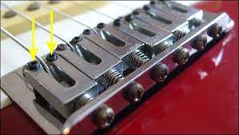

Guitar Setup
Setting up a guitar involves the following steps:
- Find the right string set for your tuning
- Adjust Neck Relief (truss rod)
- Adjust Action
- Adjust Nut Height
- Adjust Entonation
Knowing the System

Buy the correct string set for your desired tuning and guitar
I really like the calculator from StringJoy, see Calculating-Guitar-Tension
There you can input the important parameters: the desired tuning and the scale length (also supports individual scale lengths - useful for multiscale guitars).
I have no idea from where, but I heard the tension should land between [18, 25] lbs. Currently, I’m around 19 lbs on the lowest string of my 7 strings and it’s quite good for my taste.
Try searching for available guitar sets and changing the gauges in the calculator to them from the sets, in order to achieve a value in that range.
Adjust Neck Relief
This site is way better than my half-assed explanation below: https://www.taylorguitars.com/support/maintenance/truss-rod-adjustments
Neck relief is how much space is left in the playing position between the strings and the frets.
I personally measure in playing position and with all strings in the desired tuning; that way I guarantee the same tension is being applied in the neck during measurement and playing.
I don’t use any specialized tool to do that, only a business card and a capo.
- Play all strings on all frets; where do you encounter fret buzz? Refer to the picture below to find the problem.
- First assess the current state: put capo in the 1st fret and a finger in any fret where the neck is already in contact with the guitar frame. You want to use the string as a reference straight line and ignore other parameters as nut height and action.
- Slide a business card between fret and lowest string around the 7th fret
- You want the thickness of the card to be the distance between fret and string; so if it slides too loosely, then you may have backwards bow; conversely, if it is too tight, forward bow. Compare with the pic, does the problem matches the measurement? (idk about 7+ strings guitars, I tried to do this procedure measuring with the 6th string, ignoring the 7th, and it worked nicely)
- Now find the trust rod adjustment nut. In my guitar it was in the headstock, covered by a piece of plastic. Pick the correct allen key and do adjustments in 1/8th of a turn, as the pic suggests.
- Remember to always retune the guitar for the correct tension to be there. The tension impacts relief, so you need it to be there, in order for the measurement to make any sense.

2024-05-04 Currently moving clockwise (reference plane with normal headstock -> bridge) (suspecting forward bow)
Adjust Action
Action is another important adjustment to make. It’s the space between string and fret. Everybody measures on the 12th, I suggest you do it there too. It enables to eventually compare the value to some standard value or to some random guy in a forum that swears by 1mm without fret buzz on the lowest string.
You can use a ruler, filler gauges or a caliper to do the measurements. Personally, I don’t measure it at all. Let me tell you why.
Find these guys in your bridge:

There are two of them for each string. It suppose it should follow the curvature of the neck. So whenever you are adjusting them, try to do your best to adjust the same amount on both of them. This is easy to do. Just put the key and make a mental note where it is, adjust in quarter/half or full turns and just replicate on the other nut.
I tend to leave them the lowest possible, before I start hearing any fret buzz. For the lowest strings I leave them a bit higher, so they can have more sustain.
Adjust Nut Height
Never done that. Heard you have to file the nut slots with special files or just sliding an old string back and forth.
If everything you done so far didn’t lead to good results, chances are that nut height is your problem.
I would personally take the guitar for a professional setup; otherwise I would risk making it unplayable for the day or week, maybe having to order another nut.
Adjust Entonation
This should be the last thing you do, after everything is properly set up. Follow the picture below to adjust the entonation, aka. why my higher frets are so out of tune.

Final words
This is about it. This knowledge I gathered from the web.
The pics are between the first ones that show when you google action/relief, they seem to be used in many sites without citation making it impossible to find the OG source. If you happen to know the author, just write me up and I add it right away.
Oh, I applied in a bass. It also works.